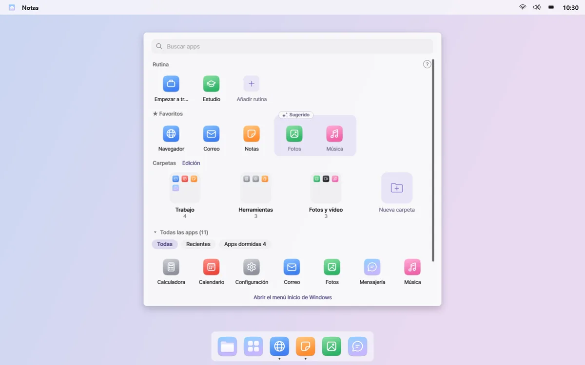
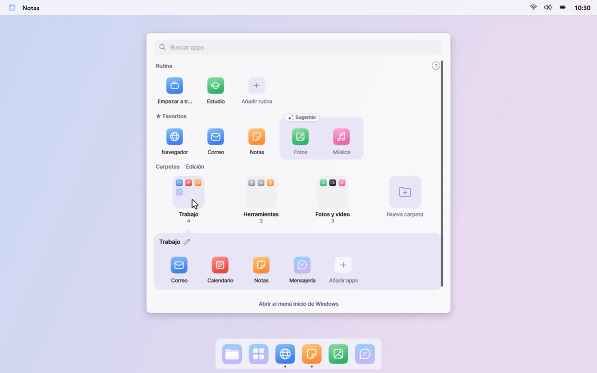
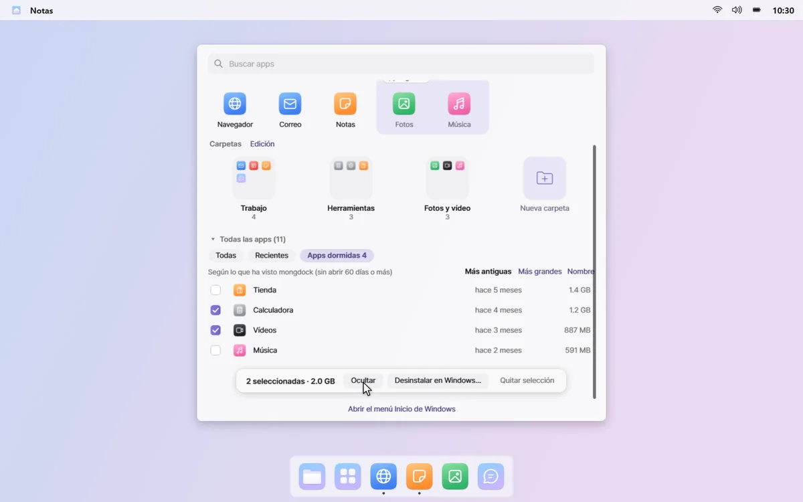

Las apps que usas, siempre a mano
Haz clic en Todas las aplicaciones en el Dock y se abre un panel en el centro de la pantalla. Favoritos, carpetas con las apps que usas y todas las apps ya están ordenados y listos.
Apps olvidadas · Apps que instalaste una vez y nunca abriste se siguen acumulando.
Empieza a escribir al instante
El panel no ocupa toda la pantalla y el cuadro de búsqueda está listo nada más abrirse. Tus rutinas están en la fila de arriba, a un clic.


Favoritos y algunas sugerencias
Fija en la fila de Favoritos las apps que más abres. Las apps que has abierto mucho últimamente aparecen como sugerencias con borde punteado; haz clic en + para añadirlas.

Carpetas solo con lo que usas
Las apps se ordenan en carpetas como Trabajo, Comunicación y Juegos, y cada una solo tiene apps que has usado hace poco. Cambia el nombre y el orden de las carpetas con un clic en el modo de edición.

Ordena las apps dormidas
Mira las «apps dormidas», las que no has abierto en más de 60 días, junto con el espacio que ocupan. Ocúltalas en el panel o elige algunas para desinstalarlas mediante Windows.

El historial de apps que alimenta las sugerencias y carpetas se queda en tu PC. Haz clic derecho en un espacio vacío del panel y desactiva «Recordar las apps que uso» para detenerlo y borrarlo. Leer la política de privacidad
Conviene saber
- Al desinstalar apps dormidas se abre, una tras otra, la desinstalación de Windows de cada app. mongdock no elimina nada por sí mismo, y las apps que no se pueden quitar así se marcan en la lista.